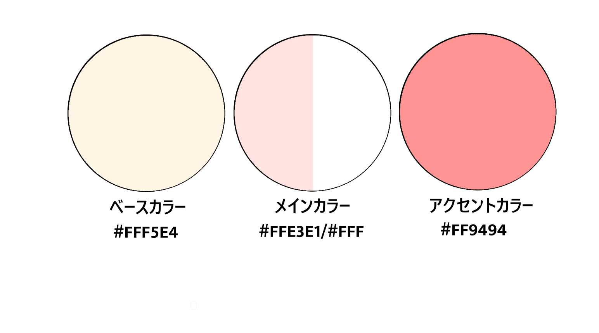
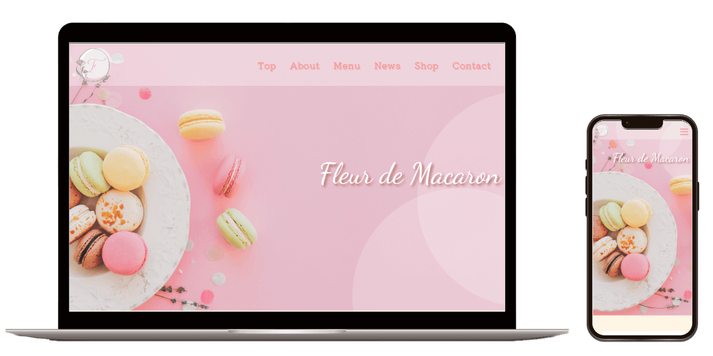
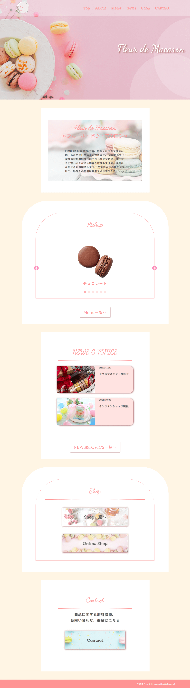
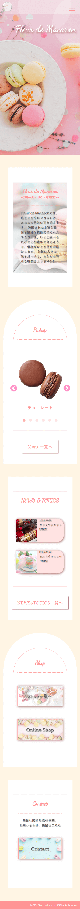

-
概要
架空のマカロン専門店のWebサイト、トップページのみ作成。今後下層ページ作成予定。
-
目的
マカロン専門店「Fleur de Macaron」の魅力を視覚的に伝え、ユーザーがスムーズに商品情報を確認し、購入や問い合わせに繋げることを目的として作成しました。具体的には、リピーターや新規顧客の関心を引くために最新ニュースやキャンペーン情報を掲載したり、ユーザーの購買行動を促進するためにPickupを設け、代表的な商品を直感的に選べるようにしました。
-
ターゲット
20代〜40代の女性、ギフトを探しているユーザー
-
情報設計
ユーザーが直感的に操作できるようシンプルで分かりやすいサイト、ということを重視し、トップページでブランドの世界観を伝えつつ、Pickupではおすすめ商品を紹介し、News&Topicsで最新情報を発信、Shopでは店舗情報とオンライン購入の導線を用意し、さらにお問い合わせページを設けることでスムーズなコミュニケーションを実現できるような流れで構成しました。
-
デザイン
このマカロン専門店のサイトは、「上品さ」と「可愛らしさ」を兼ね備えたデザインを意識して制作しました。パステルカラーを基調とし、背景や装飾に柔らかい曲線を取り入れることで、温かみのある優雅な雰囲気を持っているサイトを作成しました。 また、閲覧者がスムーズに情報を取得できるよう、シンプルなレイアウトを採用し、商品やニュースが直感的に把握できるように設計しました。
配色
 -
制作期間
3週間（企画2日、デザイン7日、コーディング12日）
-
使用ツール
Figma/ Visual Studio Code/PhotoScape X


Works

PCデザイン

SPデザイン
